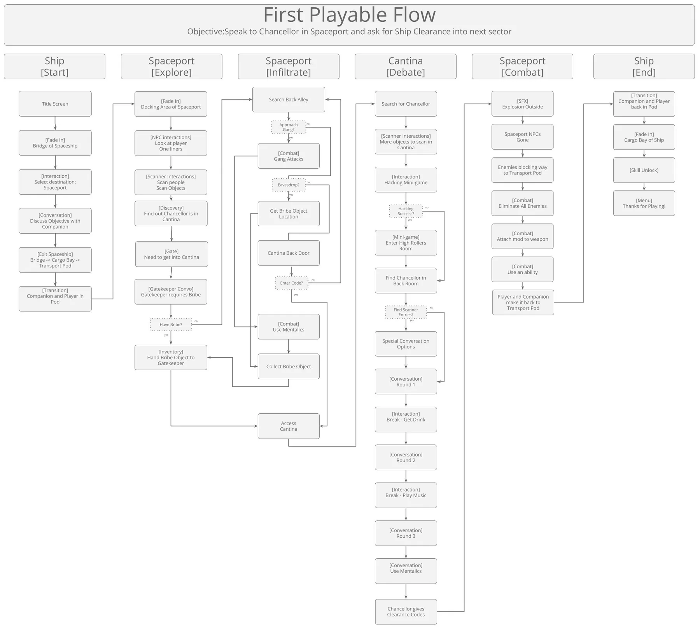
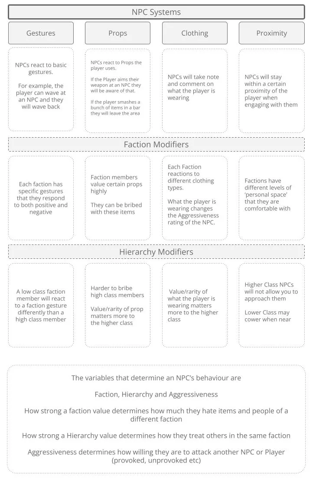

01What I owned
- Part of the initial concept and pitch team
- Pitched the game as a "love letter" to Asimov, positioned for modern audiences while respecting the IP
- Carried the narrative tools and processes from Flourish into a bigger, more ambitious title
- Directed and led the narrative and UX teams, and architected their underlying interaction systems
- Set the processes, frameworks and goals for the core of the project
- Worked closely with an Art Director and Executive Producer from Mass Effect and Dragon Age
02The pitch
Based on Isaac Asimov's groundbreaking literary saga, Journey to Foundation is an epic sci-fi VR Roleplaying Adventure.
I was part of the initial conceptualization team and pitch. I wanted to take the narrative tools and processes we had been developing on Flourish and use them on a bigger, more ambitious title. I pitched the game as a "love letter" to Asimov, positioned to appeal to modern audiences while respecting the IP and its impact on the sci-fi genre.

I operated as co-creative director on this project so that I could split my focus between this and the Horizon World project.
I had the amazing opportunity to work closely with Archiact's Art Director and Executive Producer who had both previously worked on the Mass Effect and Dragon Age series and I learnt a lot from them. I laid out a lot of the core of the project setting processes, frameworks and goals.


03Participatory drama
In VR there is a high cognitive load, and you are commanding a lot of attention from a player in a headset. The problem we wanted to solve was standing around in VR doing nothing while waiting for people to finish talking.
By using the body as a controller, our intent was to make those moments engaging and active. NPCs see you and what you are doing, not just respond to the choice you select. We wanted to put people in situations and lower the need for menu selections.
I was primarily responsible for directing and leading the narrative and UX teams and architecting their underlying interaction systems. I'm particularly proud of the narrative we created. A mantra we used was "participatory drama", where we wanted players to feel involved in the conversations through physical actions and not just menu selections. This ended up as part of the "boss fights" in the final product.


04Design documentation
Working documents from the project, shown as they were. Select an image to open it full size.


05Reception
Journey to Foundation launched on October 26, 2023 on Quest 2, PSVR 2 and Pico 4, with a PC VR version following in June 2024.
In the reviews, the narrative and story side of the game was consistently pointed out as a highlight, and that was the side of things I was mostly focused on. A few examples:
“tells a compelling story with no shortage of ambition”
“excellent voice acting and animations”
“The twists and turns are great”
06What I learned
Every project teaches you something, and Journey to Foundation left me with real room for improvement.
Alignment. We didn't answer enough of what we wanted the game to be, and we weren't aligned enough by the time we came out of pre-production. As a result we spent much more time talking conceptually, deep into development, which made for a longer and less focused production cycle.
Know the target hardware. We needed a better understanding of the technical limitations of our target hardware. Halfway through development we discovered that our semi-open, multi-path levels were not going to be feasible, so they were greatly reduced and made extremely linear.